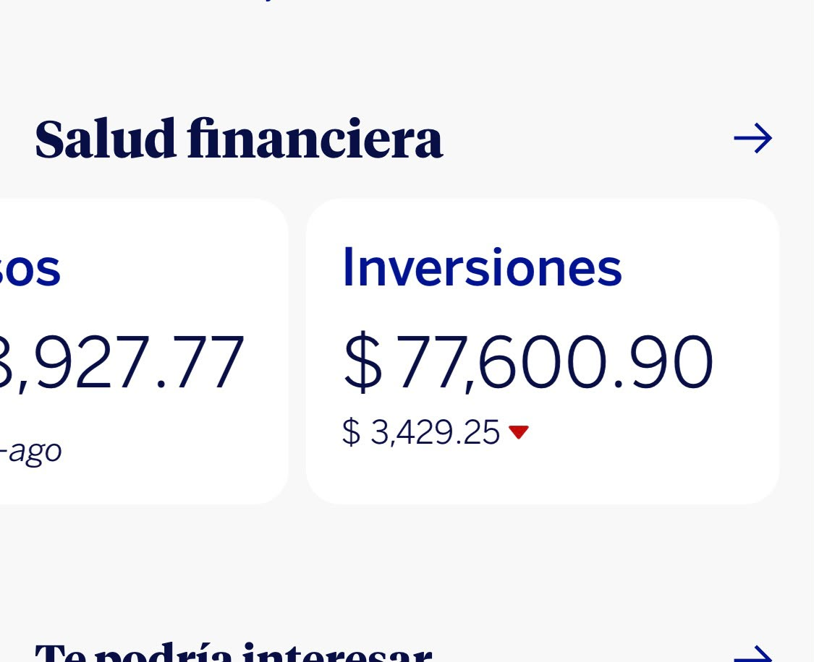
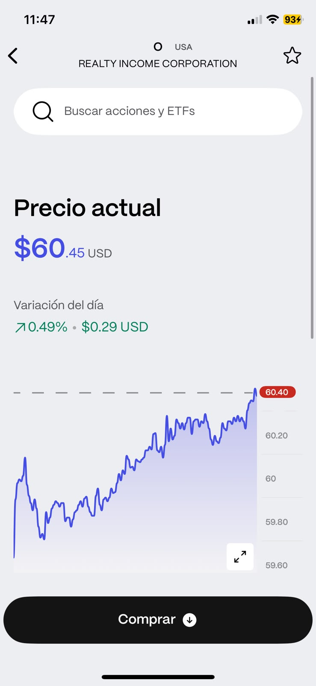

En esta imagen es uno de mis cinco pasatiempos favoritos.
Me gusta mucho invertir en empresas o bancos.
Considero que la inversión es un elemento importante
para una persona.
Es algo que llevo haciendo desde hace aproximadamente
un año.

Conocer el precio de las acciones y cómo varía
dentro del mercado es algo que también me gusta.
Aunque a corto plazo los resultados no sean
satisfactorios, considero que a largo plazo
es cuando se puede ver un cambio más significativo.